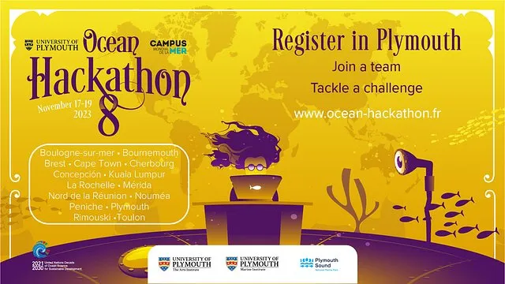
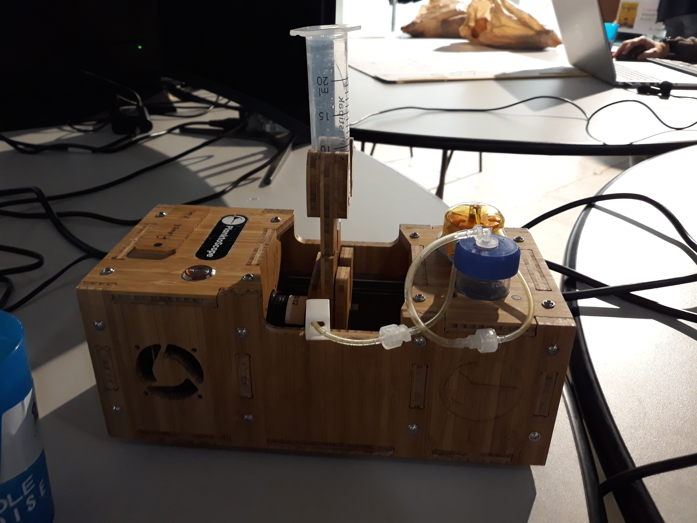
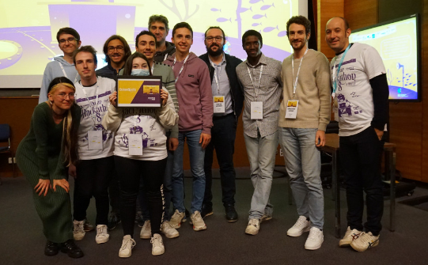

Ocean Hackathon 2023: PlanktoVision
On this page, I share my experience at the Ocean Hackathon 2023 (8th edition).
Event overview
What is Ocean Hackathon?
The Ocean Hackathon is a 48-hour international event during which several teams work on challenges related to the marine environment. This event is held in several cities in France and abroad. Some challenges holders publish their project for the event. The goal is to develop a prototype in order to bring a solution to the problematics. For this new edition, I applied for and participated in a project realted to plankton.
The project
The project originates from Thibault Pollina. He has co-founded a small company called Fairscope, which develops, produces and sells its own low-cost microscopes. This microscope, called PlanktoVision, is basically aimed at public institutions and is designed for analyzing plankton samples.
The purpose of this week-end was to add value to the existing data process by adding a visualization step between the segmentation and the classification steps. The idea was to create an intuitive, interactive and targeted visualization platform so that anyone who take a sample of water can understand quickly the composition of the sample. Also, it has been thought to automate the process of classification by using machine learning algorithms.
On the business/science side, the idea was to expand the target of the microscope to private companies, private individuals (participative sciences) and academic structures. Eventually, the goal was to make the microscope more accessible to everyone and the data more understandable.
The team
The project was carried out by a team of 12 people. We split the team into 3 groups: the devs, bioscientists and designers. The devs were assigned to test different visualization techniques and classification techniques. The bioscientists were assigned to determine the new opportunities this new feature would bring to the current bio problematics (targets, needs). The designers were assigned to handle everything that was pitch and deliverable-related.
My expectations
I join this event and more specifically this project because I want to learn more about image processing and machine learning. I had also participated in the previous edition, therefore I knew this is a great opportunity to meet and learn from fascinating, passionate and motivated people. At last, I also want to educate myself on the current stakes faced by the marine environment.
Technical part
Conclusion
Once again, this Ocean Hackathon experience was rich. I could learn from my more-experienced developer teammates, namely Angueran, Gwenn, Matthieu. Additionally, I gained valuable insights and practical experience working on a real-world application. As for the technical part, I am satisfied as well. I could learn more about image processing, more precisely about the data visualization part. Overall, this edition was a success and I am looking forward to the next one!